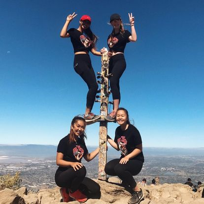

This semester in Dr. Woodward’s computational biology and bioinformatics class has taught me valuable skills that I will be able to carry into the rest of my career. I am extremely grateful to have had a professor as kind as him! Additionally, my brother is a bioinformatics scientist at Natera and it was fun getting to know what he does. Ironically, my brother’s boss has been wanting him to learn R, meanwhile I learned in this class.
Get to know a little bit about me through a quick demo of python as well as how python and R interact via reticulate:
SanicaMehta = {
'FirstName': 'Sanica',
'LastName': 'Mehta',
'occupation': ['Biology student at UT Austin', 'Aspiring M.D.'],
'hobbies': 'In general, I enjoy activities that have to do with pushing myself and exploring uncharted territory. Whether that be going to a restaurant alone and reading a book or simply navigating a new city!',
'current favorite quote': 'human beings are a mosaic of everyone we have ever met, you are the living memory of every person that has ever mattered to you - anonymous'
}
print(SanicaMehta)## {'FirstName': 'Sanica', 'LastName': 'Mehta', 'occupation': ['Biology student at UT Austin', 'Aspiring M.D.'], 'hobbies': 'In general, I enjoy activities that have to do with pushing myself and exploring uncharted territory. Whether that be going to a restaurant alone and reading a book or simply navigating a new city!', 'current favorite quote': 'human beings are a mosaic of everyone we have ever met, you are the living memory of every person that has ever mattered to you - anonymous'}print(SanicaMehta.keys())## dict_keys(['FirstName', 'LastName', 'occupation', 'hobbies', 'current favorite quote'])print(SanicaMehta.values())## dict_values(['Sanica', 'Mehta', ['Biology student at UT Austin', 'Aspiring M.D.'], 'In general, I enjoy activities that have to do with pushing myself and exploring uncharted territory. Whether that be going to a restaurant alone and reading a book or simply navigating a new city!', 'human beings are a mosaic of everyone we have ever met, you are the living memory of every person that has ever mattered to you - anonymous'])library(reticulate)
Sanica<-"an R wizard (ish),"Sanica="but a python noob"
print(r.Sanica, Sanica)## an R wizard (ish), but a python noobcat(c(Sanica,py$Sanica))## an R wizard (ish), but a python noobHere’s a picture of me doing one of my hobbies! My high school friends, who are still some of my closest friends, and I challenged ourselves to climb Mission Peak near Fremont, California. Here’s us at the very top taking an obligatory victory photo: 
Check out my past Projects!